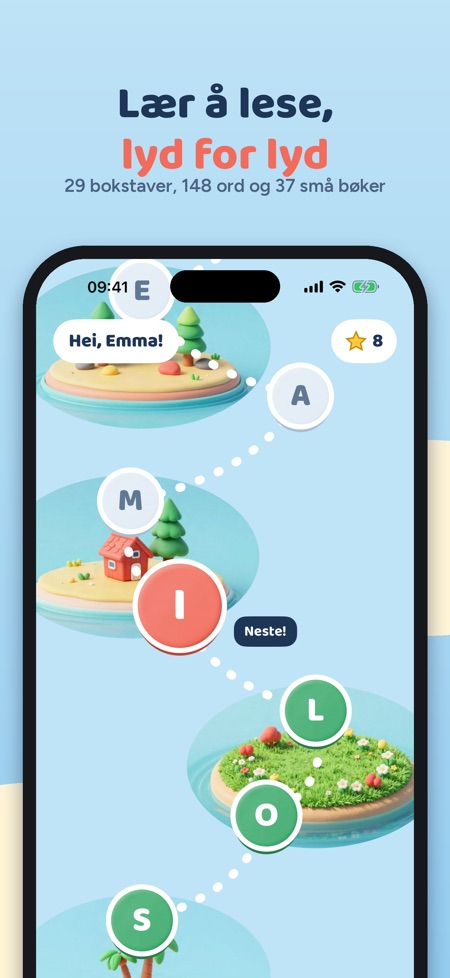
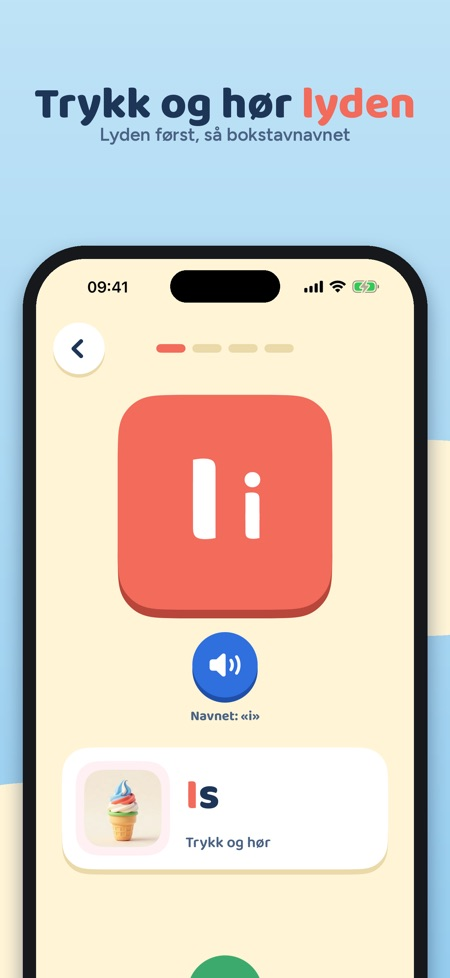
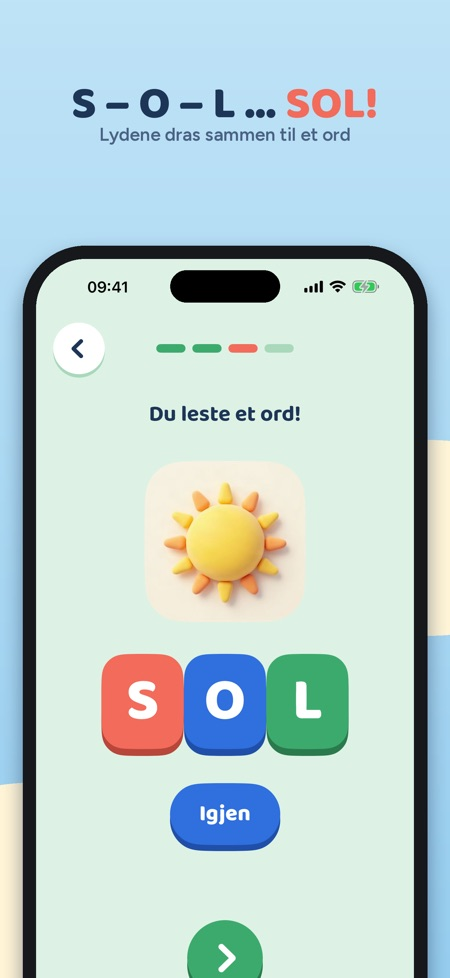

Lesestart lærer barnet å lese slik mange lærere gjør det: først lyden til bokstaven, så lydene sammen til ord, så små bøker. Appen er for barn fra 5 til 8 år.



Appen er for barn fra 5 til 8 år.
Lyd for lyd: først lyden til bokstaven, så dras lydene sammen til ord, og så leser barnet små bøker. Alt blir lest høyt, så barnet trenger ikke kunne lese fra start.
Det er 29 bokstaver, 148 ord med bilder og 103 vanlige ord å kjenne igjen, samt 37 små lesebøker.
De første fem bokstavene (S, O, L, I og M) kan brukes uten kjøp.
Nei. Ett engangskjøp åpner hele alfabetet, alle ordene og lesebøkene.
Ja, det finnes en daglig tidsgrense med en vennlig «vi fortsetter i morgen»-skjerm. Kjøp og innstillinger ligger bak en enkel voksenoppgave.
Ja, appen virker uten nett. Det er ingen reklame og ingen innlogging, og alt lagres på enheten.
Lesestart lærer barnet å lese slik mange lærere gjør det: lyd for lyd. Først lyden til bokstaven, så lydene sammen til ord, så små bøker.
29 BOKSTAVER PÅ ET EVENTYRKART
• Alle bokstavene, også Æ, Ø og Å, i en rekkefølge der ord kommer tidlig: S, O, L, I, M, A …
• Hver bokstav er en liten leksjon i fire steg, og alt blir lest høyt, så barnet trenger ikke kunne lese
• Stor og liten bokstav sammen, lyden først og bokstavnavnet på et eget trykk
FIRE STEG PER BOKSTAV
• Bokstav og lyd: trykk på bokstaven og hør lyden, med et ord og et bilde
• Lydjakt: hør lyden og finn riktig bokstav
• Lydering: trykk på lydene og dra dem sammen til et ord – sol!
• Ord og bilde: les ordet og velg bildet som passer
LESEBOK OG ORD
• 37 små lesebøker som bare bruker bokstaver barnet allerede kan
• 148 ord med bilder og 103 vanlige ord å kjenne igjen
• Trykk på et ord i boka for å høre det
BELØNNING
• Stjerner og et klistremerke for hver ny bokstav
FOR FORELDRE
• Se hvilke bokstaver barnet kan, minutter denne uka og ord som er lest
• Lyder som er litt vanskelige, med tips til hva dere kan øve på sammen
• Daglig tidsgrense med en vennlig «vi fortsetter i morgen»-skjerm
• Kjøp og innstillinger ligger bak en enkel voksenoppgave
DE FØRSTE BOKSTAVENE OG KJØP
De første fem bokstavene (S, O, L, I og M) kan brukes uten kjøp. Ett engangskjøp åpner hele alfabetet, alle ordene og lesebøkene. Ingen abonnement.
TRYGT FOR BARN
Ingen reklame, ingen innlogging, ingen analyse og ingen data som deles. Alt lagres på enheten, og appen virker uten nett.